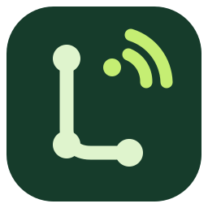

Repo Watch
仓库动态，一眼掌握
⌖
↻
＋
后台监控中
每 10 分钟刷新
正在关注
0
仓库 / REPOS
⌘
添加你的第一个仓库
支持 GitHub、Codeberg 和 Gitea
＋ 添加仓库
NEW REPOSITORY
添加仓库
×
仓库链接
可选
平台
GitHub
Codeberg
Gitea（自建）
Owner
Repository
Gitea 实例地址
访问令牌
私有仓库需要
令牌安全保存在 Windows 凭据管理器；需要 HTTPS。
取消
添加仓库
ACCESS TOKEN
仓库访问令牌
×
新令牌
令牌保存在 Windows 凭据管理器，不会显示已保存的令牌。
清除令牌
保存令牌